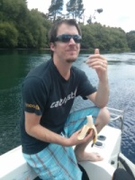
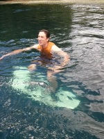

Guides for your African tours
Our trained local guides will guarantee that your African experience is unforgettable – in the best possible way. Here's who you will meet:
Sam Smith
 Sam, who has a Masters in Zoology, will be your bus driver and main tour guide. He is able to talk knowledgeably about the wildlife and landscapes of the Africa national parks.
Donna Umbago
 A native of Uganda, Donna can speak a number of African languages and is familiar with local cultures and customs. She will introduce you to the entrancing complexity of African culture.
A native of Uganda, Donna can speak a number of African languages and is familiar with local cultures and customs. She will introduce you to the entrancing complexity of African culture.
Steve Fletcher
 A former soldier, Steve is extremely capable at setting up campsites, preparing food and looking after your comfort and safety, as well as providing a guide service through the national parks of Africa.
Tour Information, Africa
Tanzania Itinerary
Destinations
Moshi, Lake Mamyara, Olduvai Gorge, Serengeti National Park, Ngorongoro Crater.
DAY 1: Moshi
Upon arrival in the town of Moshi, make your way to our accommodation to stay overnight.
DAY 2: Lake Manyara
We set out early in the morning for Lake Manyara National Park, where scenic Lake Manyara is fringed pink with flamingos and areas of marshes, grassland and acacia woodland. We enjoy an afternoon game drive in the park, hoping to spot an array of birdlife as well as sightings of elephants, lions, leopards and antelope.
DAYS 3-4: Olduvai Gorge, Serengeti National Park
We stop at Olduvai Gorge, where fossils and remnants of early man have been found, before continuing on to the savannah of the famous Serengeti National Park to see wildlife in one of the finest game viewing areas of the world.
DAY 5: Serengeti National Park, Ngorongoro Crater
After a final morning drive through the Serengeti, we travel to our camp near the rim of the Ngorongoro Crater, the largest intact caldera in the world and a World Heritage site that supports one of the highest concentrations of game in Africa. We enjoy sensational views of the crater floor before descending into the park for rewarding wildlife viewing.
DAY 6: Moshi
We return to Moshi by lunchtime to complete your tour.
Cost
$2800 including all meals, travel and accommodation during the tour.
Suggested equipment
You will need boots, bottled water, malaria tablets and sun protection. We will supply all food, camping gear and transport while you are on tour.
Kenya Itinerary
Destinations
Nairobi, Lake Nakuru National Park, Lake Naivasha
DAY 1: Nairobi, Lake Nakuru National Park
From Kenya's vibrant capital, we descend into Kenya's Great Rift Valley to Lake Nakuru National Park. The best known of a string of lakes lying along the valley floor, Lake Nakuru is world renowned for its birdlife, especially flamingos, which are attracted by the lake's shallow alkaline waters. Although small (by African standards), Nakuru National Park contains rhinoceros, buffalo, leopards, baboons, lions, antelopes and giraffes. We enter the park after lunch and spend the afternoon game driving. Finally,we leave the park for an overnight stay at a nearby hotel.
DAY 2: Lake Naivasha, Nairobi
Leaving Nakuru, we drive along the Rift Valley to the freshwater Lake Naivasha, a major centre for flower growing and horticulture. We drive to 'Crescent Island' nature reserve (on the lake shore) to see antelope, giraffes, zebras and prolific birdlife on foot. Wander around this very pleasant reserve at leisure. Seeing wild animals at ground level is a very rewarding experience, but look out for hippos (not as cute as they look!). We have lunch in Naivasha before returning to Nairobi, where the tour ends.
Cost
$1,100 including all meals, travel and accommodation during the tour.
Suggested equipment
You will need boots, bottled water, malaria tablets and sun protection. We will supply all food, camping gear and transport while you are on tour.
Uganda Itinerary
Destinations
Kampala, Bwindi Impenetrable National Park, Gorilla Trek
DAY 1: Kampala, Bwindi Impenetrable Forest
From Kampala, it is a full day's drive through beautiful countryside to the rainforests of Bwindi Impenetrable National Park. Heading south, we climb into the Kigezi Highlands, past terraced hillsides dotted with traditional settlements, and arrive at our camp on the edge of Bwindi Forest in the late afternoon.
DAY 2: Bwindi National Park, Gorilla Trek
Bwindi is a magnificent green swathe of ancient rainforest and an area of unrivalled biodiversity. In the early morning, we embark on our gorilla trek, entering the tangled and mist-shrouded forests, accompanied by experienced guides and trackers. We may scramble over mossy rocks and through deep undergrowth on our search through the rainforest, but the effort is more than worth it. Watching these amazing animals in their natural habitat is an unforgettable experience. After an hour with the gorillas, we return to our camp for a relaxing afternoon.
DAY 3: Kampala
Departing in the early morning, we drive back to Kampala, stopping for lunch en route. We expect to arrive back in Kampala in the early evening after our short but exhilarating experience in the African jungle.
Cost
$1,500 including all meals, travel and accommodation during the tour.
Suggested equipment
You will need boots, bottled water, malaria tablets and sun protection. We will supply all food, camping gear and transport while you are on tour.
Reference Information
Follow the link http://www.lonelyplanet.com/ to provide links to some selected destinations